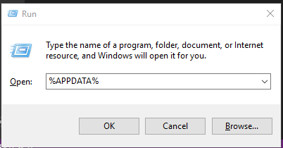
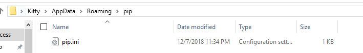

一、windows
1、windows环境下 pip换国内镜像
1、打开user目录，user目录可以通过win+R 然后添加 %APPDATA% (不区分大小写)

2、直接在中创建一个pip目录，如：C:\Users\xx\pip，新建文件pip.ini：

3、拿任意文本编辑器打开，添加以下内容
[global]
timeout = 6000
index-url = http://pypi.douban.com/simple
trusted-host = pypi.douban.com保存即可
1.2、win10 换npm 源
npm config set registry https://registry.npm.taobao.org
npm install gulp less --save-dev然后输入
npm config list出现一条registry = "https://registry.npm.taobao.org/"则成功
二、Ubuntu
2.1、Ubuntu环境下 pip换国内镜像
1、在主目录下创建.pip文件夹,然后在该目录下创建pip.conf文件
mkdir ~/.pip
vim ~/.pip/pip.conf2、pip.conf文件编写如下内容（更换为清华大学镜像源）：
[global]
index-url = https://pypi.tuna.tsinghua.edu.cn/simple
2.2、Ubuntu更换系统源 apt-get
1、复制原文件备份
sudo cp /etc/apt/sources.list /etc/apt/sources.list.bak2、编辑源列表文件(对vim不熟可使用gedit)
sudo vim /etc/apt/sources.list3、将原来的列表删除，添加如下内容
deb http://mirrors.aliyun.com/ubuntu/ bionic main restricted universe multiverse
deb http://mirrors.aliyun.com/ubuntu/ bionic-security main restricted universe multiverse
deb http://mirrors.aliyun.com/ubuntu/ bionic-updates main restricted universe multiverse
deb http://mirrors.aliyun.com/ubuntu/ bionic-proposed main restricted universe multiverse
deb http://mirrors.aliyun.com/ubuntu/ bionic-backports main restricted universe multiverse
deb-src http://mirrors.aliyun.com/ubuntu/ bionic main restricted universe multiverse
deb-src http://mirrors.aliyun.com/ubuntu/ bionic-security main restricted universe multiverse
deb-src http://mirrors.aliyun.com/ubuntu/ bionic-updates main restricted universe multiverse
deb-src http://mirrors.aliyun.com/ubuntu/ bionic-proposed main restricted universe multiverse
deb-src http://mirrors.aliyun.com/ubuntu/ bionic-backports main restricted universe multiverse4、更新本地索引列表运行
sudo apt-get update #更新本地索引列表
#sudo apt-get upgrade # 可选/根据更新的索引升级已安装的所有软件包2.3、ubuntu 换npm 源
npm config set registry https://registry.npm.taobao.org2.4、ubuntu打开终端自动定位到桌面
sudo gedit ~/.bashrc
后面加入
if [[ $PWD == $(realpath ~) ]]; then
cd ~/Desktop/
fi如果是中文系统把Desktop改为桌面
2.5、32位运行库
sudo apt-get install gcc-multilib
sudo apt-get install libc6:i3862.6、一些推荐的软件
sudo apt-get install gdebi
#安装deb
sudo apt-get install synaptic
#新立得软件包管理器
sudo apt install python-pip
sudo apt install python3-pip
#python包管理器
sudo apt-get install vim
sudo apt-get install git2.7、pwn环境配置
git clone https://github.com/pwndbg/pwndbg
cd pwndbg
./setup.sh
#pwngdb,调试神器
sudo apt-get install gcc-multilib
sudo apt-get install libc6:i386
#64位系统跑32位程序
pip install -i https://pypi.tuna.tsinghua.edu.cn/simple pwntools
#pwntools3、显卡问题导致开机卡住
安装Linux 双系统（一般是Nvidia显卡，1080p加核显的电脑）时，经常会出现卡在安装logo的问题，这种原因一般是由于linux发行商收录的nouveau 的开源显卡的问题。针对这种情况，解决方案如下：
在进入grub安装界面的时候，在Install Ubuntu选项，按e,进入命令行模式，然后在quiet slash – 后面(也可能没有 – )，添加以下内容，然后按F10重新引导
acpi_osi=linux nomodeset然后能开机，但是每次重启都要来一次，所以解决方法是
sudo gedit /etc/modprobe.d/blacklist.conf在文本最后添加：（禁用nouveau第三方驱动，之后也不需要改回来）
blacklist nouveau
options nouveau modeset=0然后执行：
sudo update-initramfs -u即可